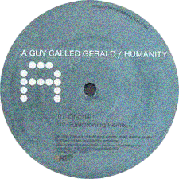
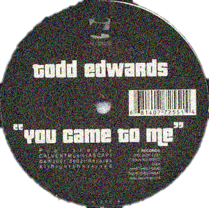
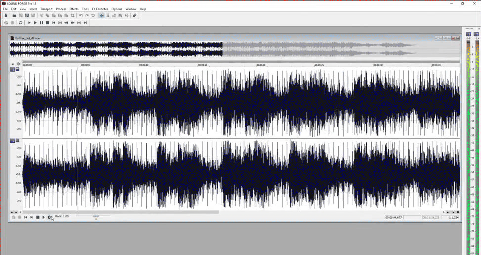

Wire: Kode9 says that the new album has a feeling of ‘downcast euphoria’, whereas the first one was just downcast.
Burial: When I listened to these old tapes, I took what these jungle MCs were telling me seriously. Rolling a tune out, I took it as a commandment about how to make a tune: roll it out, do it fast. I was into old hardcore, darkside, trying to do a properly dark record. Not this new, pumped up tech sound. I liked the old tunes, properly darkside like finding a body in a lift shaft: dank moody tunes, suburban tunes. I want to go back to that hardcore era of darkside someday, which would be rugged, film samples just pitched up and down with strings. It wasn’t just that pure monochrome thing, it was something else, it sounded like tearing through an empty building. But the thing is, I had this bunch of tunes for my 2nd album that were dark tunes, and I just scrapped them. I took ages on them. I was worrying, because after my first album I felt a bit of pressure to follow it up. I worked for hours on these tunes, and I was trying to learn these programmes. These tunes were darker, more technical, all the tunes sounded like some kind of weapon that was being taken apart and put back together again. But then I got sort of sick of them, because I spent so long on them, I was moody about other things. So I wanted to make a glowing record, I wanted to cheer myself up. Instead of doing those dark tunes that took ages and were really detailed, I wanted to make a record fast. Something warm, glowing, junglist and garagey. I was listening to these Guy Called Gerald tunes. I wanted to do vocals but I can’t get a proper singer like him. So I cut up acapellas and made different sentences, even if they didn’t make sense but they summed up what I was feeling. I love those Foul Play and Omni Trio tunes where it was just the girl next door singing, So I got a lot of those quite low-quality vocals and started to pitch them up and down. You can do it really fast. I sort of did the whole album in about two weeks. Most of it in the final week. When I made this a lot of things were wrong. It was nice to say, ‘fuck this’, I’m just going to make it well fast. So I’m quite defensive of it. When you’re making a tune and it’s really late… I heard this thing on EastEnders about burning the candle at both ends with a flamethrower, I was making tunes in the middle of the night, if I didn’t have the vocal to keep me awake, like singing a lullaby, trying to hypnotise myself so I didn’t fall asleep.
Wire: It’s like a reverse lullaby in a way – instead of sending you to sleep, it’s keeping you awake! With the first album, it felt like the references were early-mid 90s jungle, whereas with the new one, it’s as if things have moved on two or three years, to UK garage and 2-step.
Burial: I love UK garage, I love 2-step and Todd Edwards. For a long time I felt that no-one liked it, some music people cussed it because they're stupid, but its music for real people, those tunes still sound better than most stuff when you’re out. I don’t know many people who like tunes but I had one mate who had a car and let me test my tunes, I always liked deeper nighttime tunes, a bit more rolling - garage, dubstep is half pulse, half sway, so it sounds good in a car at night.
I wanted to make a half euphoric record. That was an older thing that UK underground music used to have. I think that type of euphoria is a British thing, like UK tunes, old rave tunes used to be the masters of that, for a reason, to do with the rave, a half smile, half human endorphins and half something hypnotized by drugs. It was stolen from us and it never really came back. Mates laugh at me because I like whale songs but I love ‘em, I like vocals to be like that, like a night cry, an angel animal. Old hardcore tunes would throw these sounds in, anything to create the rush, descent into another world, like Papua New Guinea by Future Sound of London. love this one feeling, it only happens to you when you’re out in the cold, when your down, this shiver attempts to warm you up, bring you back. For a moment you get this weird, eerie distant feeling like it’s just for you, you get taken out of yourself. Certain tunes just nail that. So I had to do that, but have cut-up vocals and have that slinky bumping feel to it, and not get weighed down in big drums and the big snares. With Garage the drums are taken back, they’re quite soft, it’s more about being slinky. They’re like a fishbone, a spine, an exoskeleton that cradles the sounds. It’s not about the deepest kick or the biggest snare. The drums are more about trying to thread sounds and vocals together, they flicker across the surface of the tune, it circles around you, its not just chopping you up, its not about the sounds being big.
Wire: That’s the part of the reason you’re not happy with using sequencers?
Burial: Also because I don’t know how to use them!
Wire: Yeah, but you could learn! But things often sound sequenced when they are.
Burial: That’s happened to a lot of music. It's detailed in a boring way. I’m not into big intros, because if you’ve got a big intro, the rest of the tune is forever the rest of the tune, and the intro’s forever the intro. You can never get lost in it, you know where you are in most tunes, and that just takes away the only reason a tune should exist to me, I can't relate to grey music. I like tunes that just dive straight in, there’s a jump off and once you’re in it, the awareness that you’re two minutes into a tune, or four minutes into a tune is gone. That’s how I like my tunes. Or something like Robert Hood, just pure presence, shark-like, elements woven together. You can sense them sitting there rolling out the tune.
Wire: Your tunes are like being in a fog, it’s diffuse, but it’s all around you.
Burial: Then a couple of sounds might come up, glow, the rest of them sink down and burn out.
Wire: I saw you mention it in another interview, that when you’re used to making tunes and looking at a screen, you can just see that grid when you hear the tunes.
Burial: I’ve seen people using sequencers and I’ve tried hard to use them but it’s blocks in different colours and I'm only used to just seeing the waves. I don’t need to listen much to the drums because I know they look nice, like a fishbone, rigged up to be kind of skitty, sharp. My tunes are a bit rubbish and messy but it's all I know. One day I want to make a tune people can have a dance to, I've tried.
Wire: What did you think when people were saying that you hadn’t produced it all in Sound Forge, it’s a scam.
Burial: Who?
Wire: People on the internet, saying he can’t possibly have done that whole album in Sound Forge.
Burial: Really? Yeah well I did. I'll leave those people to their internet or whatever. Yeah I wish sometimes that I’d gone to college to learn music production, but other times I’m like ‘no, fuck, I’m happy I didn’t’.
I don’t really go on the internet, it’s like a ouija board, it’s like letting someone into your head, behind your eyes. It lets randoms in.
Wire: The tracks you made and discarded. Do they still exist?
Burial: Some of them I lost because my computer’s dead. But I’ve got a few of them and I might resurrect them. I lost faith. I want to learn but its difficult, I've made mistakes. Next album maybe I'll gather my forces, make a true darkside Burial album. Step up and do it.
Wire: One of the greatest things about your music is the sense of place, and it’s so specific to South London. When I first heard it, I lived in South London and as I listened to the LP walking around, it was a perfect fit.
Burial: Thanks for saying that. I spend a lot of time wandering around London, I always have. Sometimes it’s because I’ve got somewhere to go, sometimes it’s because I haven't got anywhere to go. So I’d be wandering endlessly, getting in places. Being on your own listening to headphones is not a million miles away from being in a club surrounded by people, you let it in, you’re more open to it. Sometimes you get that feeling like a ghost touched your heart, like someone walks with you. In London, there’s a kind of atmosphere that everyone knows about but if you talk about it, it just sort of disappears. London’s part of me, I'm proud of it but it can be dark, sometimes recently I don't even recognize it.
It's about being on a night bus, or with your mates, walking home across your city on your own late at night, or being in a situation with your girlfriend or boyfriend, or coming back from a club, or putting tunes on an falling asleep. If your well into tunes, your life starts to weave around them. I’d rather hear a tune about real life, about the UK, than some US hiphop. 'I’m in the club with your girl' type thing. I love r&b tunes and vocals but I like hearing things that are true to the UK, like drum&bass and dubstep, Once you've heard that underground music in your life, other stuff just sounds like a fucking advert, imported.
Wire: Even though your music really captures what it’s like to be in the UK, it connects with other people outside Britain too.
Burial: If you alone could hear someone upset on the other side of the world, then maybe then you could do something about it. I was once in these mountains, you’d see these fires, other people sleeping out in the mountains, traders across the border, and that gives you this feeling, night time, awareness of other people sleeping. But all it is just a fire light. You see their firelight and you know they are there, that’s all you need. That’s what ties cities to places that aren’t together, deserts, forests, people. You watch over your city or area at night, you see the distant lights, fires burning in other places.
Wire: Angels are mentioned a few times on the album. Why is that?
Burial: You see people, and you’re disconnected from them, they mean fuck-all to you, but other times you can invest everything in someone you don’t even know, silently believe in them, it might be on the underground or in a shop or something. You hope people are doing that with you as well. Some people, even when they’re quite young, and they’re in difficulty, maybe taking a battering in their life, but they still handle themselves with grace. I hope most people can be like that, hold it together, I wanted this album to be for people in that situation.
It's easy to fall away and fuck up and for many people there's no safety net. Sometimes one tune can mean everything, it's like a talisman.
Wire: The people on the album seem like wounded or mutilated angels: angels whose wings have been clipped, or who have been trapped or betrayed.
Burial: Yeah. When you think of some of things people go through, everyday troubles, relationship things, other stuff. Everyone knows those sorts of feelings. I wanted to do songs about that low-key stuff. There are a couple of tunes with the vocal to do with angels on it. Sometimes I’d be hearing a song … I was worrying, I’d made all these dark tunes, and I played ‘em to my mum, and she didn’t like them. I was going to give up, but she was sweet, telling me, ‘just do a tune, fuck everyone off, don’t worry about it.’ My dog died, and I was totally gutted about that. She was just like, ‘make a tune, cheer up, stay up late, make a cup of tea’. And I rang her mobile twenty minutes later and I’d made that ‘Archangel’ tune, and I was like, ‘I’ve made the tune, the tune you told me to make.’ And I heard this vocal and it doesn't say it but it sounds like ‘archangel’. I like pitching down female vocals so they sound male, and pitching up male vocals so they sound like a girl singing. It can sound sexy as fuck.
Wire: That works. When I listen to the record, I can’t work out whether the vocals belong to males or females. And angels aren’t supposed to have no gender.
Burial: Really? Well that works nice with my tunes, kind of half boy half girl, but that can be dark too. Sometimes in a mirror people see the devil's face for a second, that wrong aspect, the eyes, in your own. When you are young you are pushed around by forces that are nothing to do with you. You’re lost, most of the time you don't understand what’s going on with yourself, with anything.
 UNSEEN
UNSEEN
UNSEEN